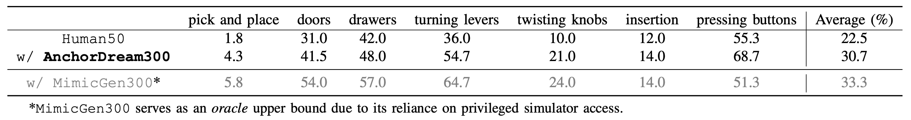
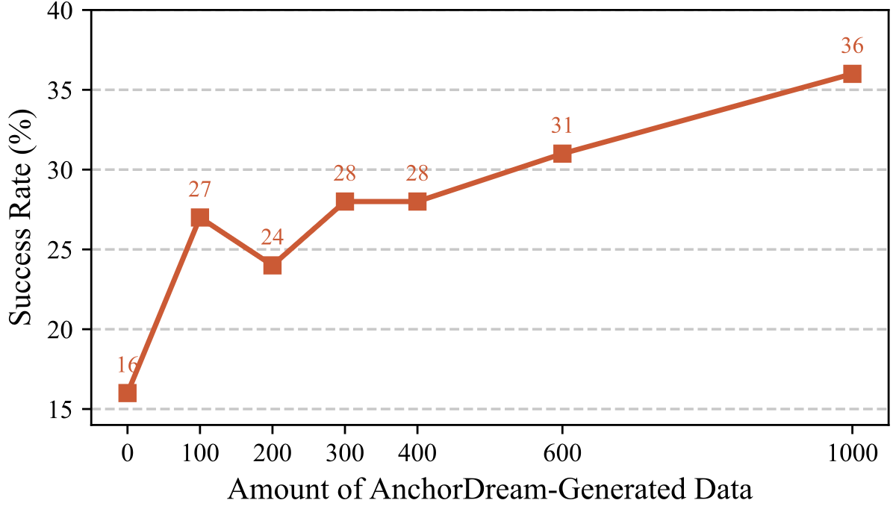
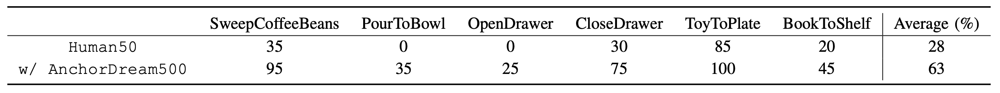

The collection of large-scale and diverse robot demonstrations remains a major bottleneck for imitation learning, as real-world data acquisition is costly and simulators offer limited diversity and fidelity. To address these limitations, we introduce AnchorDream, an embodiment-aware world model that repurposes pretrained video diffusion models for robot data synthesis. AnchorDream conditions the diffusion process on robot motion renderings, anchoring the embodiment to prevent hallucination while synthesizing objects and environments consistent with the robot's kinematics. Starting from only a handful of human teleoperation demonstrations, our method scales them into large, diverse, high-quality datasets without requiring explicit environment modeling. Experiments show that the generated data leads to consistent improvements in downstream policy learning, with relative gains of 36.4% in simulator benchmarks and nearly double performance in real-world studies.
Starting from a small set of human teleoperated demonstrations, new trajectories are created by perturbing key states and recombining motion segments. Each augmented trajectory is rendered as a robot-only motion video, which conditions AnchorDream to synthesize realistic demonstrations where environment objects are consistent with the planned trajectory. This design anchors generation on robot motion, avoiding explicit scene reconstruction.
AnchorDream goes beyond visual realism by introducing significant spatial diversity. By conditioning on augmented robot trajectories, the model actively steers scene layouts to vary object positions and interactions, creating a rich distribution of valid states for robust policy learning.
Synthesized demonstration of grasping and tilting a cup to pour into a bowl.
To assess whether AnchorDream empowers policy learning from a small seed dataset, we compare three distinct data regimes on the RoboCasa benchmark:
As shown below, adding AnchorDream-generated data raises the average success rate from 22.5% to 30.7%, a 36% relative improvement. Our method consistently improves performance across all skills and approaches the oracle baseline.

Does more synthesized data lead to better policies? We trained policies with Human50 plus varying amounts of AnchorDream-generated demonstrations (from 100 to 1000). The results confirm that performance improves steadily as more synthesized data is added, validating the effectiveness of scaling AnchorDream for stronger policy learning.

We evaluated AnchorDream on six everyday manipulation tasks using a PiPER robot. Augmenting the original 50 human demonstrations with 10x AnchorDream-generated data doubles the average success rate (from 28% to 63%), demonstrating significant gains in real-world settings.

On six real-robot tasks, policies trained with 50 demonstrations reach only 28% average success rate. Adding 10x AnchorDream-generated demonstrations boosts the success rate to 63%.
@article{ye2025anchordream,
title={AnchorDream: Repurposing Video Diffusion for Embodiment-Aware Robot Data Synthesis},
author={Ye, Junjie and Xue, Rong and Van Hoorick, Basile and Tokmakov, Pavel and Irshad, Muhammad Zubair and Wang, Yue and Guizilini, Vitor},
journal={arXiv preprint},
year={2025}
}